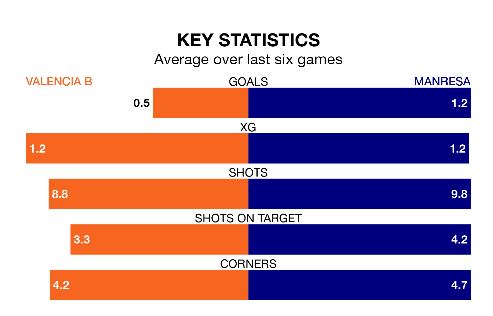

Valencia B are on a terrible run ahead of hosting Manresa at the Estadio Antonio Puchades on Sunday, with just two points collected from their last six games.
Valencia B have picked up two draws and four losses in their last six Segunda División RFEF Group 3 games, and face a Manresa side whose last six games have brought two wins and two draws.
With 16 goals in 18 games so far this season, Manresa are the league's third-lowest scorers with 0.9 goals per game. But they are conceding fewer than average too, letting in 15 goals at a rate of 0.8 per game.
Valencia B, meanwhile, are average scorers, with 1.2 goals per game. They have conceded 1.3 goals per game.
The home team are 15th in the table after 18 games, of which they have won four and drawn six, earning 18 points.
The visitors are three places ahead of Valencia B in 12th, with five wins and seven draws putting them on 22 points.
In the last three years, Valencia B and Manresa have played each other on three occasions. Valencia B won two of them and Manresa one.
Their last meeting was on September 9, when Valencia B won 1-0 away.
Valencia B's last match was on January 14, a 1-1 draw against Andratx.
Manresa drew 0-0 with Atlético Saguntino last time out, also on January 14.
Updated: 06:13 (UTC), 18/01/24